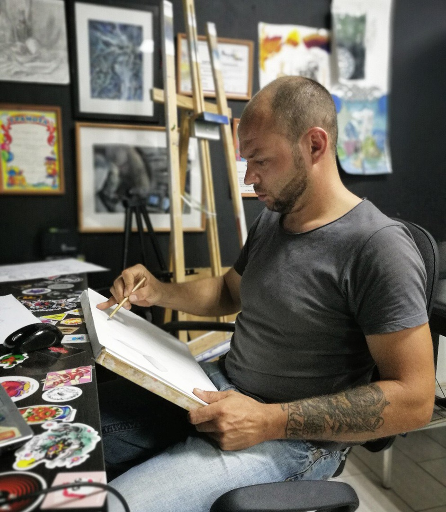
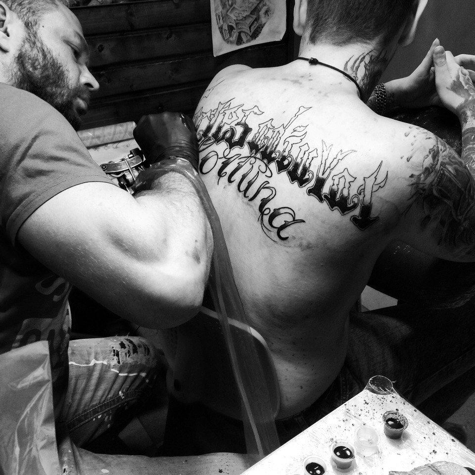

Для Романа Котова из Краснодара татуировка не была основным источником дохода. Зарабатывал 35 тысяч рублей в месяц, обслуживая 3-5 клиентов.
После прохождения курса доход увеличился до 100-250 тысяч рублей в месяц, с 8 клиентами в среднем. Появилась финансовая уверенность, купил машину, благоустраивает участок в пригороде.
— Ром, а поделишься, что было до курса, какой средний доход был в месяц? Сколько клиентов?
— Тааакс до курса не помню но это точно был не основной доход, в смысле тату. 3-5 человек в месяц. За какие-то небольшие деньги точно не помню. Работал на дому. Чет около 35000 рублей.
— Какие сложности были во время обучения на нашем курсе? Насколько сложно было учиться? За сколько прошел обучение?
— Обучение прошел по графику. За 3 месяца. Было тяжело выкроить время, но сам велосипед – задача оказалась решаемой.
— Ты ведь самостоятельно проходил курс, как думаешь с куратором было бы легче? быстрее?
— Первый раз сам, второй – с куратором. С куратором проще)
— Ого, ты даже два раза осилил) Каково было работать с куратором, что было полезно, мотивировало ли это тебя?
— Да был определенный дедлайн и обратная связь. Это намного лучше чем изучать соло. По мне так)
— Какие сейчас действия делаешь для привлечения клиентов? Как часто пишешь посты? Запускаешь ли рекламу?
— Сейчас работаю на «старых дрожжах» нету смысла что то запускать.

Посты от случая к случаю.
Хватило того импульса который я получил по прохождению курса, прямо или косвенно, но все работает по сей день как-то само.
— А можешь поделиться, как изменилась жизнь, когда увеличился доход? Может что-то купил себе? Съездил в путешествие? Что-то смог сделать, чего раньше не мог позволить себе?)
— Доход 100-250 тысяч в месяц. Появилась уверенность. Взял машину. Благоустраиваю участок в пригороде. В какой-то момент стал работать в более профессиональном коллективе. С уверенностью в своих силах пришла и свобода.

Уверен, что оплачу счета. Могу что-то планировать и следовать плану.
Участок взял в кредит и уже рассчитался.
— Все, остался только вопрос, сколько клиентов в среднем в месяц? Как цены? И вот сколько за год было прошедший заработано?
— В среднем сейчас +- 8 сеансов. Стоимость сеанса – 15 000, не считаю мелочь. За прошлый год около 2 млн, наверное, не знаю как точно посмотреть. Обленился)
— Спасибо большое, очень радуют твои результаты. И приятно получить твою обратную связь.